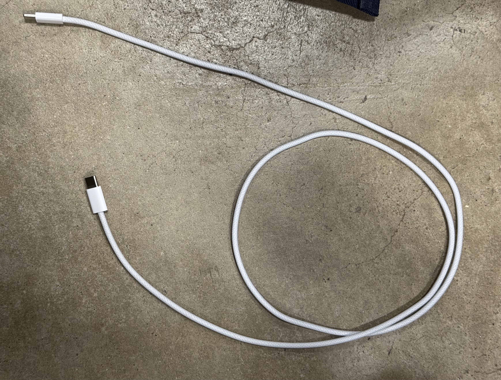
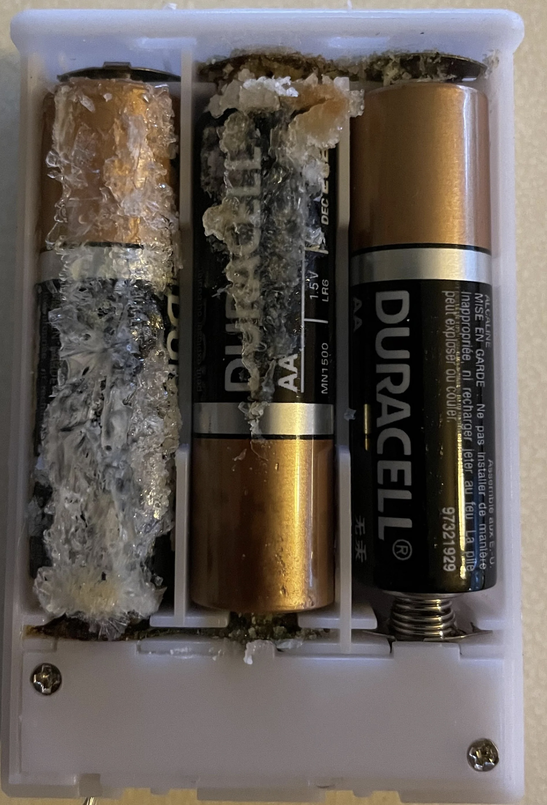
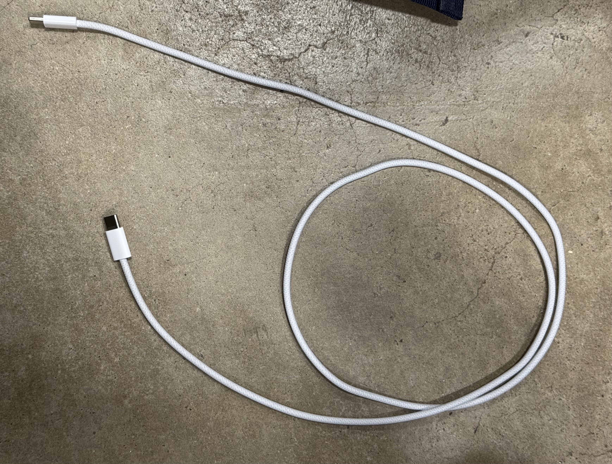
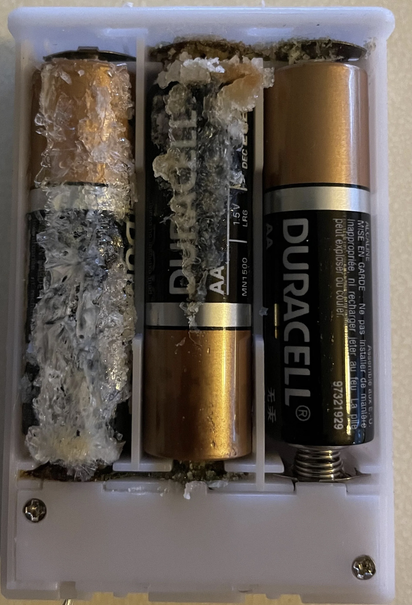
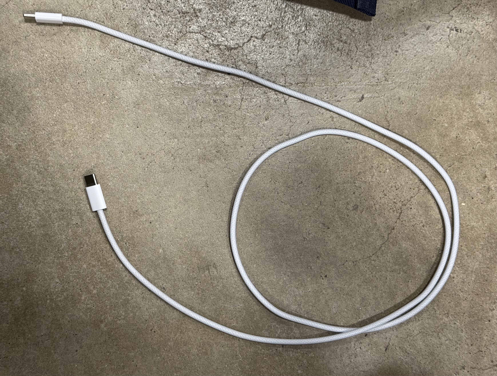
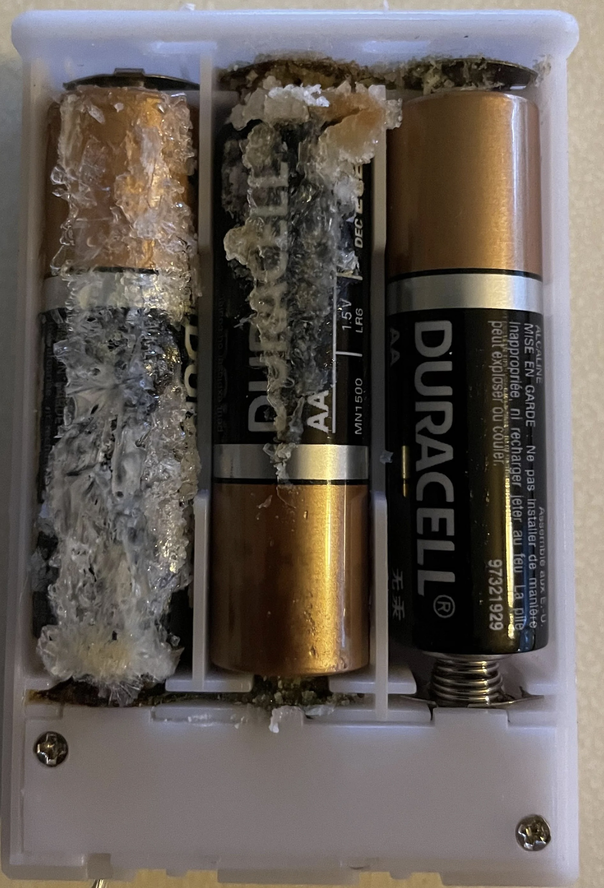

This is a project about Trash! If you want to learn about trash, this is the best place for that! This is not about cars... Every week I will share something new about my experience with Trash. Whatever I throw out or recycle or reuse, has its own story, whether it be the way it was used or what it was before it was used.
At first glance, trash may seem like nothing more than a pile of discarded objects, but I’ve come to realize that each item we throw away has a story—where it came from, how it was used, and why it ended up in the bin. Documenting my weekly trash allows me to reflect on consumption habits, appreciate the usefulness of everyday objects, and reconsider sustainability in small but meaningful ways.
This project has also made me more conscious of the waste I generate. Some items, like an old notebook or an empty shampoo bottle, were used to their full extent, while others, like a broken hanger, were unexpected casualties. By categorizing and analyzing my weekly trash, I can identify patterns in my consumption, explore sustainable alternatives, and share my experiences with others who might also want to rethink waste.
It’s easy to ignore what we discard, but this project challenges me to confront it. Whether it's a corroded battery that reminds me of planned obsolescence or a pen that stopped working in the middle of an important interview, every piece of trash has a lesson to teach.
This week’s trash collection provided interesting insights into my daily habits, particularly how much of my waste comes from routine activities rather than impulse decisions. Compared to last week, when most of my discarded items were random things I found lying around my room, this week’s waste was closely tied to specific moments throughout my day. The most surprising realization was how many essential items reached the end of their life span when I needed them the most—whether it was a hanger breaking right before an important interview, a pen running out of ink mid-sentence, or batteries failing just as I was about to unwind.
Another pattern I noticed was the mix of planned waste versus unexpected waste. Some items, like my engineering notebook, had served their purpose and were naturally ready for disposal. Others, like the empty tissue box, caught me off guard and forced me to improvise. This week made me reflect on how little I think about replacing items before they run out or break—and how small changes in planning could make my life a little more convenient.
Looking at this week’s trash, I noticed that many of the things I threw away were either completely used up or failed unexpectedly. The biggest takeaway was that a little planning—checking my pen ink before an interview, restocking essential supplies before they run out—could save me from minor inconveniences. I also realized that a lot of my waste comes from single-use packaging, something I want to be more mindful of moving forward.
The hanger takes the spotlight as this week’s "Item of the Week" because it played a critical role in my Honeywell interview preparation. Unfortunately, its structural integrity gave out at the worst possible moment.
I bought this plastic hanger a year ago as part of a set, primarily to keep my professional clothes wrinkle-free. It wasn’t expensive, but it served its purpose—until now. I used it to hold my suit for my interview, ensuring I looked polished and ready. However, just before I put my suit on, the hanger snapped.
This got me thinking about the life cycle of plastic hangers. They’re often mass-produced from non-biodegradable materials, which means they end up in landfills after breaking. Some retailers offer recycling programs, but they are rare. This makes me reconsider purchasing plastic hangers in the future—I may opt for sturdier wooden or metal alternatives that last longer and reduce waste.
Plastic waste is a growing problem, and small changes, like choosing more durable materials, can help minimize unnecessary waste.


| Item | Description | Category |
|---|---|---|
| Hanger | Used to hold clothes, but it broke. | Non-Recyclable |
| Pen | Ran out of ink during the interview. | Non-Recyclable |
| Batteries | Corroded and unusable. | Hazardous |
| Shampoo Bottle | Empty after use. | Recyclable |
| Granola Bar Wrapper | Empty after eating the snack. | Non-Recyclable |
| Engineering Notebook | Old and full. | Recyclable |
| Sweet Box | Empty after eating sweets. | Recyclable |
| Tissue Box | Empty after use. | Recyclable |
| Kitchen Tissue | Used instead of a kleenex. | Organic |